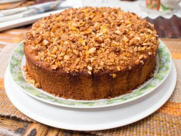

Bolo de pé de moleque
- 1 xícara de açúcar
- 1 xícara de amendoim sem pele e sem sal
- 2 ovos
- 1/3 de xícara de óleo
- 1/3 de xícara de leite
- 1 xícara de açúcar
- 1 xícara de farinha de trigo
- ½ xícara de amendoim triturado
- 1 colher de sopa de fermento em pó
Ingredientes
Confira o Video:
Modo de Preparo
Na própria assadeira de furo central, em fogo médio, derreta o açúcar formando um caramelo, depois espalhe esse caramelo no fundo e laterais e espalhe o amendoim para que grude. Reserve e prepare a massa. Coloque os demais ingredientes no Liquidificador e bata por cerca de 1 minuto em velocidade média. Despeje essa massa na assadeira e leve para assar em forno já pré-aquecido em 180º até estar bem dourado. Faça um teste espetando um palito no centro do bolo para ver se está pronto, se sair com massa crua precisará assar por mais tempo, se sair limpo estará pronto.